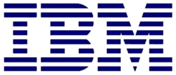
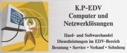

The JAviator Quadrotor: An Aerial Software Testbed
The JAviator (Java Aviator) project is a research project of the Computational Systems Group at the Department of Computer Sciences of the University of Salzburg, Austria. The goal of the project is to develop high-level real-time and concurrent programming abstractions and test them on UAVs (Unmanned Aerial Vehicles). We are working on methodologies that enable time-portable programming of high-performance, hard real-time applications in Java. The resulting application code is not only efficient but also robust with respect to real time. Time-portable programs do not change their real-time behavior across different hardware platforms and workloads similar to Java's write-once-run-anywhere paradigm for functional behavior but extended to the temporal domain. In collaboration with the IBM Thomas J. Watson Research Center in Hawthorne, New York, USA, we are developing a software infrastructure that supports the time-portable execution of Java programs. We test our implementations on the JAviator, an electric quadrotor helicopter shaped like a cross with four rotors, one at each end. One pair of opposite rotors spins clockwise, the other pair counter-clockwise. The JAviator is controlled merely by adjusting the rotors' speed without changing the angle of its rotor blades. The JAviator is mechanically simpler than a traditional helicopter but very agile yet still inherently unstable and therefore very hard to fly. We have designed and manufactured the JAviator completely from scratch using only high-performance materials such as carbon fiber, aircraft aluminum, and medical titanium. The JAviator is an autonomously flying software laboratory that supports high payloads for a variety of complex sensors such as GPS, sonars, and lasers as well as networking services such as WLAN and wireless RS232.
-

Research collaboration and project funding by the IBM Thomas J. Watson Research Center.
-

Hardware support and project funding by the K.P-EDV Company.
-
Initial funding (start-up funds of Prof. Kirsch) by the University of Salzburg.
-
Project support by the Techno-Z, Salzburg.
-
Custom-built carbon-fiber JAviator parts by the Carbon Team Germany GmbH.